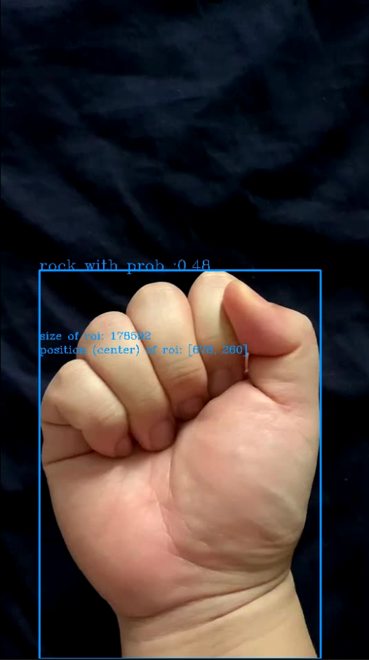

Problem Definition
The target of this homework is to design and implement algorithms that can recognize hand shapes or gestures and create a graphical display that responds to the recognition of the hand shapes or gestures. The result is useful because the algorithms can be applied on videos to recognize the information expressed by gestures or hand shapes. If the system works perfectly, it can save people from the heavy work of checking the videos. Since our method is based on skin color detection, we need to make the assumption that the background does not contain many segments of skin color. We also need to make the assumption that the background is supplied with appropriate natural light because of the sensitivity of template matching.
Method and Implementation
We mainly applied the following techniques in this project:
1. horizontal and vertical projections to find bounding boxes of "movement blobs" or "skin-color blobs"
2. size and center of region of interest
3. template matching
4. frame-to-frame differencing: D’(x,y,t) = |I(x,y,t)-I(x,y,t-1)|
5. skin-color detection (e.g., thresholding red and green pixel values)
Specifically, the video is read frame by frame. For each frame, we used skin-color detection to extract the region of interest (ROI). Then, ROI is compared with templates to recognize the gestures or hand shapes. In this experiment, the method can recognize 4 hand shapes and 1 gestures, which are rock, six, thumbup, thumbdown, and shaking hand respectively. For hand shape recognition, 2 templates are provided for each hand shape and the template with highest NCC output will be chosen as the final result. The gesture recogination is based on frame-to-frame differencing. To extract the ROI from the template images, we used horizontal and vertical projections to find the bounding boxes. To extract the ROI from the videos, since the background can be much more complex than templates, we used cv2.findContours() functions to determine the ROI.
- skin_detect(src, close=False, kernel_size=0) : skin-color detection
- crop_template(template_binary,mask,offset=20), get_boundingbox(frame, mask): horizontal and vertical projections to find bounding boxes of "movement blobs" or "skin-color blobs"
- NCC(subimage, template), template_matching(cropped_img): template matching
- difference(first,second, threshold = 50): frame-to-frame differecing
- size, center_coordinate: size and center of regoin of interest
Experiments
In this system, we provided two ways to read data. The first ways is to load data from a video and the second way is to use the front camera of the laptop to record the real-time data. We applied 2 different templates (shown below) for hand shapes. The performance of the system is mainly evaluated by human eyes and confusion matrix. To demonstrate the performance of our method, we provide a demo video "demo.mp4". The outputs of the demo video are saved as "demo_output.avi", "demo_output_skin_mask.avi", and "demo_output_frame_diff.avi".
| Front | Back | |
| Rock |  |
 |
| Six |  |
 |
| Thumbup |  |
 |
| Thumbdown |  |
 |
Results
Screenshoots | |||
| rock |  | six | |
|---|---|---|---|
| thumbup (shaking hand) | thumbdown (shaking hand) | ||
Videos | |
| Hand Shapes and Gestures Recognition | |
|---|---|
| Skin Color Detection | |
| Frame-to-frame Difference | |
Confusion matrix for hand shape recognition
| Hand Shape | Rock | Six | Thumbup | Thumbdown |
|---|---|---|---|---|
| Rock | 10 | 4 | 1 | 2 |
| Six | 0 | 6 | 0 | 0 |
| Thumbup | 0 | 0 | 7 | 0 |
| Thumbdown | 0 | 0 | 2 | 8 |
Confusion matrix for motion recognition (shaking hand)
| Motion | Shaking | stable |
|---|---|---|
| Shaking | 10 | 0 |
| Stable | 0 | 10 |
Discussion
- Our system can recognize 4 hand shapes (rock, six, thumbup, thumbdown) and 1 gesture (shaking hand) in real-time. The result looks promising when the background and angles are appropriate.
- The major downside of our method is that it is sensitive to the environment, such as lightness, angles of hands, and color of background. The major limitation is that the input video should include one hand from the front view or back view, and the color of background should be different from skin color.
- A potential improvement is that we can provide more templates for hand shapes, not just the front view and back view. It can help the system become more robust. We can also develop more effective algorithms to recognize the hand from the videos, not only according to color, but also based on shape, motion, and so on.
Conclusions
In this assignment, we build a system which can recognize hand shapes and gestures well under certain conditions. Generally, the preliminary results look good, but the template matching method make the system be sensitive to the interference of background, lightness, angles and so on. To make the system more practical, we need to develop a more robust system. The potential improvements include but are not limited to collecting more templates, including more preprocessing methods, collecting a dataset to develop deep learning frameworks.
Credits and Bibliography
This work is based on content I learned in the class. Specifically, I refered these two links
https://www.cs.bu.edu/faculty/betke/cs585/restricted/lectures/cs585-Feb9-2021.pdf
http://homepages.inf.ed.ac.uk/rbf/CVonline/LOCAL_COPIES/OWENS/LECT2/node3.html